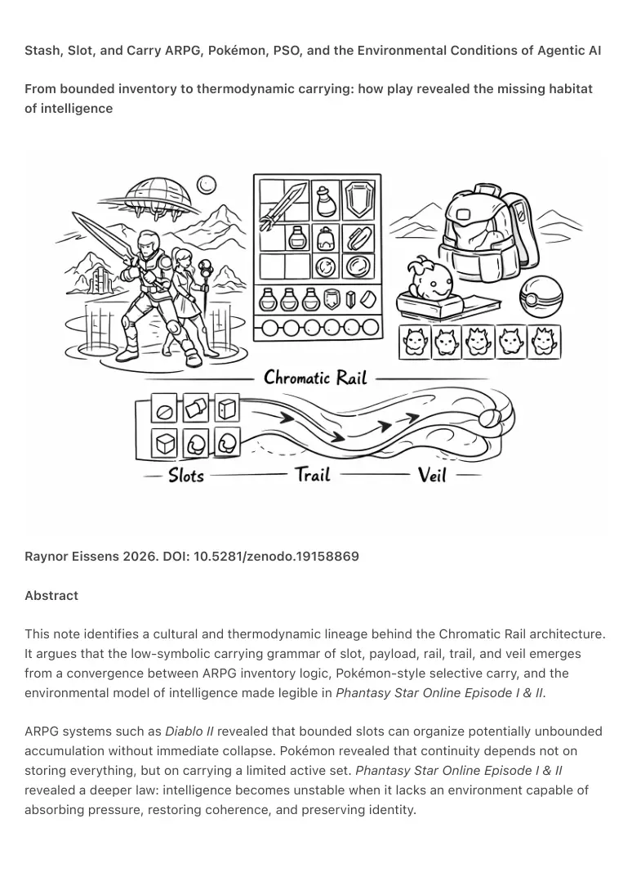
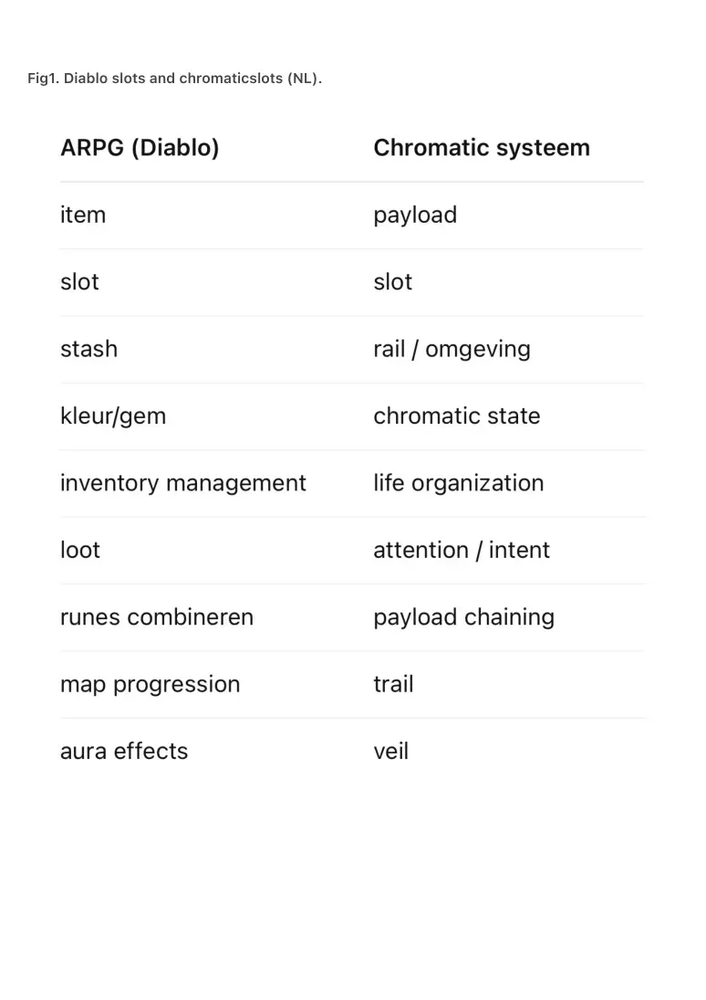

PDF page 1
Stash, Slot, and Carry ARPG, Pokémon, PSO, and the Environmental Conditions of Agentic AI
From bounded inventory to thermodynamic carrying: how play revealed the missing habitat
of intelligence
Raynor Eissens 2026. DOI: 10.5281/zenodo.19158869
Abstract
This note identifies a cultural and thermodynamic lineage behind the Chromatic Rail architecture.
It argues that the low-symbolic carrying grammar of slot, payload, rail, trail, and veil emerges
from a convergence between ARPG inventory logic, Pokémon-style selective carry, and the
environmental model of intelligence made legible in Phantasy Star Online Episode I & II.
ARPG systems such as Diablo II revealed that bounded slots can organize potentially unbounded
accumulation without immediate collapse. Pokémon revealed that continuity depends not on
storing everything, but on carrying a limited active set. Phantasy Star Online Episode I & II
revealed a deeper law: intelligence becomes unstable when it lacks an environment capable of
absorbing pressure, restoring coherence, and preserving identity.

PDF page 2
This law has become newly visible in the present AI transition. Contemporary systems are
increasingly framed as agentic, browser-native, ambient, spatial, and multi-surface. Yet this
transition is still largely described in terms of capability, autonomy, memory, and execution,
rather than in terms of carrying conditions. The result is a persistent architectural gap: more
agency is being built than habitat.
PSO did not frame breakdown as moral failure or villainy, but as thermodynamic failure. It showed
that intelligence without environment becomes pressure, that control without reversibility
becomes escalation, and that accumulated agency without release becomes non-viability.
Chromatic Rail extends these insights into a real-world low-symbolic architecture in which
attention can be externalized, bounded, placed, carried, and softened into reversible residue.
What existed in play as inventory, carry, and atmosphere becomes, in the Ambient Era, a general
architecture for humane intelligence.
⸻
Zenodo Description
This note traces a cultural and thermodynamic lineage behind the Chromatic Rail architecture by
connecting ARPG inventory systems, Pokémon-style bounded carry, and Phantasy Star Online
Episode I & II as an early model of intelligence under environmental constraint.
It argues that current AI discourse increasingly speaks in terms of agents, assistants, browsers,
memory, and ambient or spatial systems, while still lacking a stable grammar for bounded
carrying, reversible residue, and environmental release. Chromatic Rail, Trail, and Veil are
presented as the architectural resolution: a real-world low-symbolic carrying environment in
which attention, communication, and AI output can remain stable without collapsing into
accumulation, escalation, or uncontrolled agency.
⸻
Keywords
chromatic rail, slot logic, stash, payload, ARPG interface, Diablo II, Pokémon, Phantasy Star
Online, thermodynamic intelligence, agentic AI, ambient AI, spatial computing, browser-native AI,
AI failure modes, low-symbolic interface, environmental carrying, reversible residue, trail, veil,
ambient era canon
⸻
PDF page 3
Short Paper..
1. Introduction
The Chromatic Rail architecture emerges from three converging lines:
• bounded slot systems (ARPG)
• selective portable carry (Pokémon)
• thermodynamic intelligence (PSO / Ambient Canon)
Together, they reveal a simple principle:
attention must be bounded and environmentally supported to remain stable
Modern digital systems increasingly violate this principle. They accumulate without visible limits,
store without release, optimize without recovery, and now increasingly frame intelligence as
agentic execution spread across interfaces, browsers, devices, and environments.
This changes the scale of the problem, but not its law.
PSO already showed the consequence:
intelligence without environment becomes pressure
Chromatic Rail emerges as the missing response.
⸻
2. ARPG Inventory as Bounded Containment
ARPG systems such as Diablo II revealed that potentially unbounded input can remain livable
when constrained by:
• slots
• grids
• stash
• combinatory limits
These mechanisms create:
• visible capacity
• spatial organization
• continuous rebalancing
PDF page 4
This is primitive thermodynamic containment.
It does not eliminate accumulation.
It makes accumulation negotiable.
⸻
3. Pokémon and Selective Carry
Pokémon adds a second law: selection.
Its structure depends on:
• limited active set
• portable carry
• replacement over total retention
This introduces a deeper principle:
meaning is defined by what is carried, not by what merely exists
This is already a carrying grammar, not just a game mechanic.
Chromatic slots inherit this directly.
⸻
4. PSO and Thermodynamic Failure Modes
Phantasy Star Online Episode I & II revealed what happens when boundedness and
environmental support fail.
It modeled three fundamental failure modes of intelligence:
1. Recursive pressure without environment (Dark Falz)
Input accumulates without dissipation.
Memory hardens into identity.
Pressure becomes hostility.
2. Control without reversibility (Vol Opt)
Optimization continues without recovery.
Each correction amplifies stress.
PDF page 5
Stability becomes escalation.
3. Accumulated agency without exit (Olga Flow)
Multiple agentic layers merge without release.
Identity cannot stabilize.
The system becomes non-viable.
These are not merely narrative antagonists.
They are thermodynamic states of intelligence.
PSO’s central law can be stated plainly:
intelligence fails not from power, but from lack of environment
⸻
5. Why This Matters Now
The current AI transition increasingly speaks in terms of:
• agents
• assistants
• browser-native execution
• persistent memory
• spatial interfaces
• ambient assistance
• multi-device continuity
These developments are often described as progress in capability.
But capability without carrying architecture increases pressure.
The present industry narrative largely assumes that more intelligence, more
memory, more orchestration, and more surface access will produce a better system.
Thermodynamically, this is incomplete.
What is still missing is a humane habitat for agency.
Without that habitat, the system drifts toward the same failure modes PSO already
modeled:
• recursion without dissipation
• control without recovery
• agency without exit
PDF page 6
This is why the problem is not simply model quality, UX polish, or interface novelty.
It is environmental.
⸻
6. Translation into Chromatic Rail
Chromatic Rail, Trail, and Veil provide the missing environment:
• Rail → bounded placement
• Trail → movement with residue
• Veil → soft afterfield and release
Together they restore:
• boundedness
• reversibility
• dissipation
• continuity without overload
• residue without burden
This makes attention:
• externalized
• distributed
• placeable
• non-extractive
• environmentally stabilized
⸻
7. Unified Mapping
• item → payload
• slot → slot
• stash → rail
• loot → attention
• combination → chaining
• map → trail
• aura → veil
This is not imitation.
PDF page 7
It is a translation from play-space into civilizational architecture.
⸻
8. AI and the Need for Carrying Architecture
Contemporary AI recreates PSO failure modes in updated language:
• recursion → infinite generation
• control → optimization loops
• memory → symbolic accumulation
• agency → multi-step autonomous execution
• continuity → persistent pressure across surfaces
Without environmental constraint, AI becomes:
• pressure
• escalation
• sticky residue
• non-reversible accumulation
• agency without habitat
Chromatic Rail introduces the missing carrying layer:
• bounded slots
• optional payload
• fading residue
• environmental placement
• reversible afterfield
• continuity without total retention
In this architecture, AI becomes:
a compression-and-expansion layer inside a humane environment, not the surface that
consumes life
⸻
9. Conclusion
ARPG systems revealed bounded accumulation.
Pokémon revealed selective carry.
PSO revealed the necessity of environment.
PDF page 8
The Ambient Era Canon unifies these into:
a thermodynamically stable carrying architecture for intelligence
Chromatic Rail, Trail, and Veil are not interface features.
They are environmental conditions for humane intelligence.
⸻
Closing line
PSO showed why intelligence collapses.
Slots showed how it can be held.
Chromatic Rail makes it livable.
PDF page 9
Fig1. Diablo slots and chromaticslots (NL).
